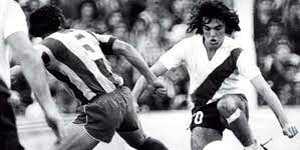
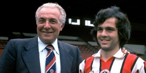
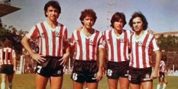
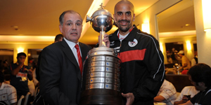
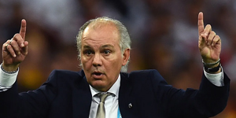

SUS COMIENZOS
Alejandro Sabella nació el 5 de noviembre de 1954 en Buenos Aires. Se inició en las inferiores del Club Atlético River Plate, y fue, desde un principio, señalado como un 10 clásico de "Los Millonarios". Era el tiempo de Norberto Alonso, y sobre sus espaldas tenía una gran responsabilidad. Habilidoso e inteligente, no desentonó y formó parte del plantel de Ángel Labruna que ganó varios campeonatos, pero alternando en la Primera. En 4 años llegó a disputar 118 partidos y convertir 11 goles, pero la comparación con Alonso lo perjudicó en la consideración general.

EN INGLATERRA
En 1978 fue vendido por River al Sheffield United, de la Tercera División de Inglaterra. Su buena labor le permitió pasar a Leeds United, de la Primera. Le fue bien, pero tendría que regresar a Argentina.

EN ESTUDIANTES
En diciembre de 1981 comenzó a buscar un club de Argentina, y fue vendido a Estudiantes de La Plata. De la mano de su entrenador, Carlos Salvador Bilardo, el equipo llegó a las semifinales del torneo Nacional de 1982 (Sabella sufrió una lesión en la primera semifinal de la serie contra Quilmes). Luego, en el campeonato Metropolitano de ese mismo año, junto con Marcelo Trobbiani, José Daniel Ponce y Miguel Ángel Russo, formaría el exquisito mediocampo del equipo de Estudiantes que ganó dos campeonatos.
Cuando Bilardo se hizo cargo de la Selección de fútbol de Argentina, Sabella compitió por un lugar con los veteranos Alonso y Bochini, y jugadores más jóvenes como Carlos Tapia y Jorge Burruchaga. Pero una sombra aún más grande fue la lanzada por el rey de la generación de los años 1980, Diego Armando Maradona. Es por esto que Sabella jugó sólo cuatro veces para el equipo nacional, durante la Copa América 1983 y no logró ser convocado para la Copa Mundial de Fútbol de 1986.

CARRERA COMO DT
El 15 de marzo de 2009, Sabella asumió como Director Técnico de Estudiantes de La Plata, club con el cual logró la tan laureada y destacada Copa Libertadores de América en el mismo año. Luego, en diciembre de 2009, dirigiría a su equipo en la prestigiosa Copa Mundial de Clubes de la FIFA, donde llegaría hasta la final, siendo vencido por el elenco de Pep Guardiola, el FC Barcelona, por 2 goles a 1. También al ganar la Copa Libertadores 2009 disputó el partido decisivo de la Recopa Sudamericana 2010 donde su elenco fue derrotado por la Liga de Quito. En 2010 logró un título local tras sumar 45 puntos en el campeonato. Pese a las bajas de José Sosa, Mauro Boselli, Marcos Angeleri, Christian Cellay, Clemente Rodríguez y Marcelo Carrusca, supo sortear las distintas dificultades que se le presentaron para coronarse nuevamente campeón. En febrero de 2011, presentó la renuncia debido a su disconformidad con los dirigentes y según algunas fuentes, desgastada su relación con Juan Sebastián Verón -versión que fue desmentida por el propio Juan Sebastián y también por Sabella- quien en un encuentro por el festejo del título obtenido en el año 2010, manifestó: "No voy a hablar, me podés seguir preguntando pero no voy a contestar. No tuve ningún problema con ningún jugador(...)"- y la 'Brujita' manifestó emotivamente: "Sabella nos dejó mucho y quedarnos sin él fue difícil, pero de a poco nos vamos recuperando. Muchos de nosotros nos mantenemos en contacto con él y el cuerpo técnico. Ojalá pueda volver al club, es uno de esos personajes que queda grabado en la historia de la institución".
CONQUISTANDO AMERICA
En aquella edición de la competición más importante de Sudamérica, el Pincha quedó encuadrado en el Grupo 5 junto a Cruzeiro, Deportivo Quito y Universitario y se clasificó a los octavos de final en segunda posición. Superó a Libertad, Defensor Sporting y Nacional y en la final se vería las caras con Cruzeiro. Los brasileños no eran un equipo fácil. Ya les había tocado enfrentarse en la fase de grupos y ganaron un partido cada uno. La ida quedó empate a cero y quedaba todo por resolverse en la vuelta, en Belo Horizonte. Un escenario muy complicado para un Estudiantes que soñaba con tocar la gloria 39 años después. Henrique sembró el pánico entre la hinchada platense en el minuto 52, pero rápidamente el Pincha se repuso y Gastón Fernández puso tablas en el marcador. Mauro Boselli se vistió de héroe y marcó el 1-2 definitivo que selló la victoria de Estudiantes.

EN LA SELECCION
En el mismo mes de su renuncia, la ANFP lo voceó como principal candidato a suceder a Marcelo Bielsa como entrenador de la Selección Chilena de Fútbol.
En el año 2011, firmó un contrato con el club Al-Jazira Sporting Club en los Emiratos Árabes Unidos para dirigirlo, pero luego fue contratado por la Asociación del Fútbol Argentino para ser el sucesor de Sergio Batista en la dirigencia técnica de la Selección absoluta argentina, dejando atrás a otros candidatos como Carlos Bianchi o Gerardo Martino. Fue presentado en el predio de Ezeiza el 6 de agosto de 2011 y le dio la capitanía de la Selección a Lionel Messi. En su primer cotejo al frente de la Selección de Fútbol Argentina, le ganó a la Selección de Venezuela por 1-0 con un gol de cabeza de Nicolás Otamendi luego de un centro de Lionel Messi. Llevó a la albiceleste al subcampeonato en el Mundial 2014, antes de ceder su puesto a Gerardo Martino.8

ALEJANDRO SABELLA 1954-2020
Alejandro Sabella fallecio el 8 de diciembre de 2020, dejando un gran legado en la ciudad y en el país. No solo por el jugador y DT que fue, sino por el tipo
de persona que era. Alejandro con su sencillez y humildad deja no solo un gran recuerdo en las personas que lo conocieron o lo siguieron, sino un listado de valores que toda persona debe tener.
Como dijo Claudio Gugnali "Con cuatro o cinco Sabellas se arregla este quilombo de pais". Alejandro te incita a ser no solo un mejor profesional, sino una mejor persona.